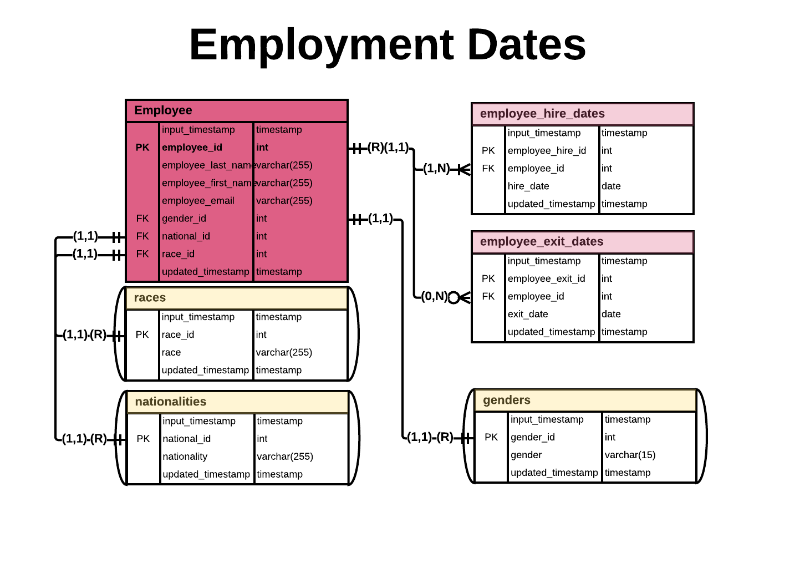
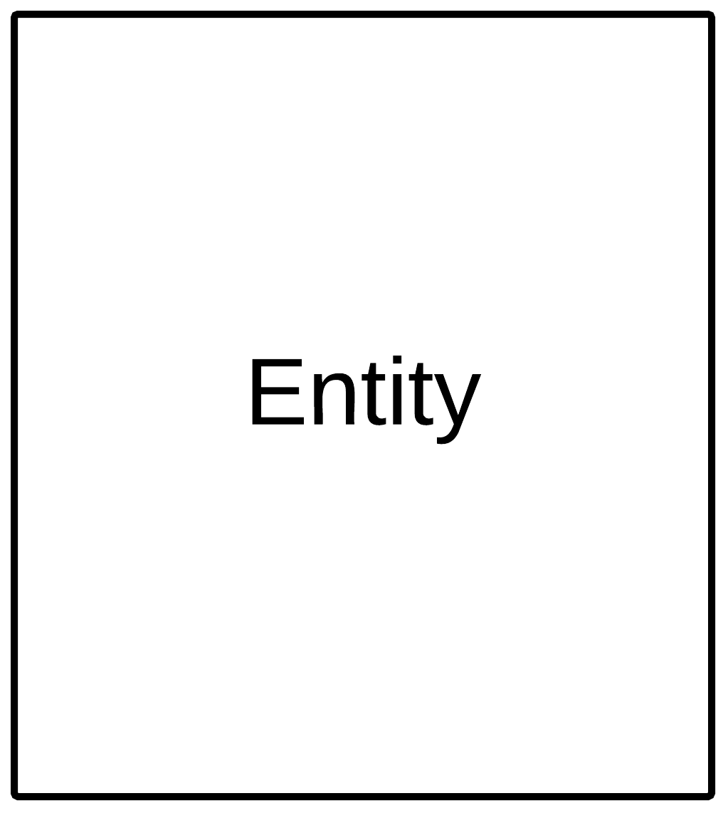
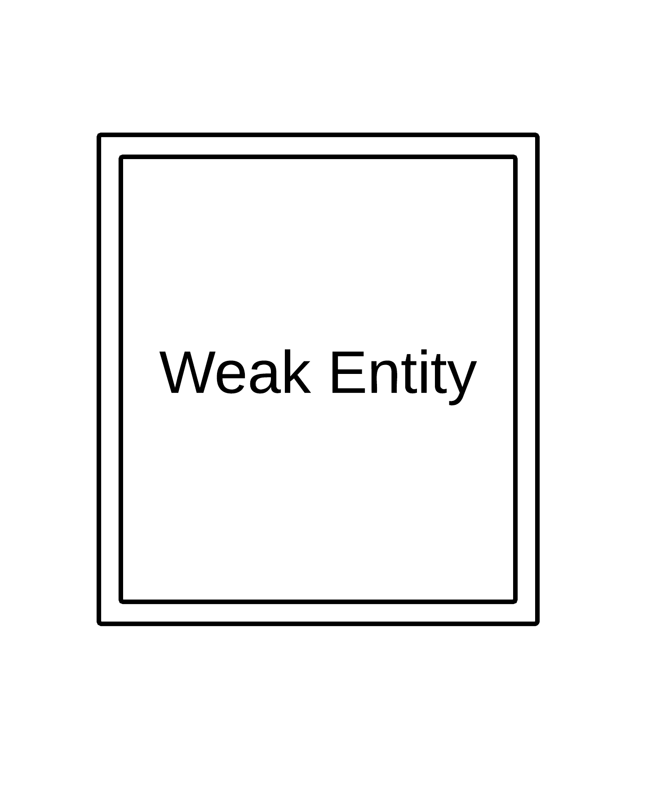
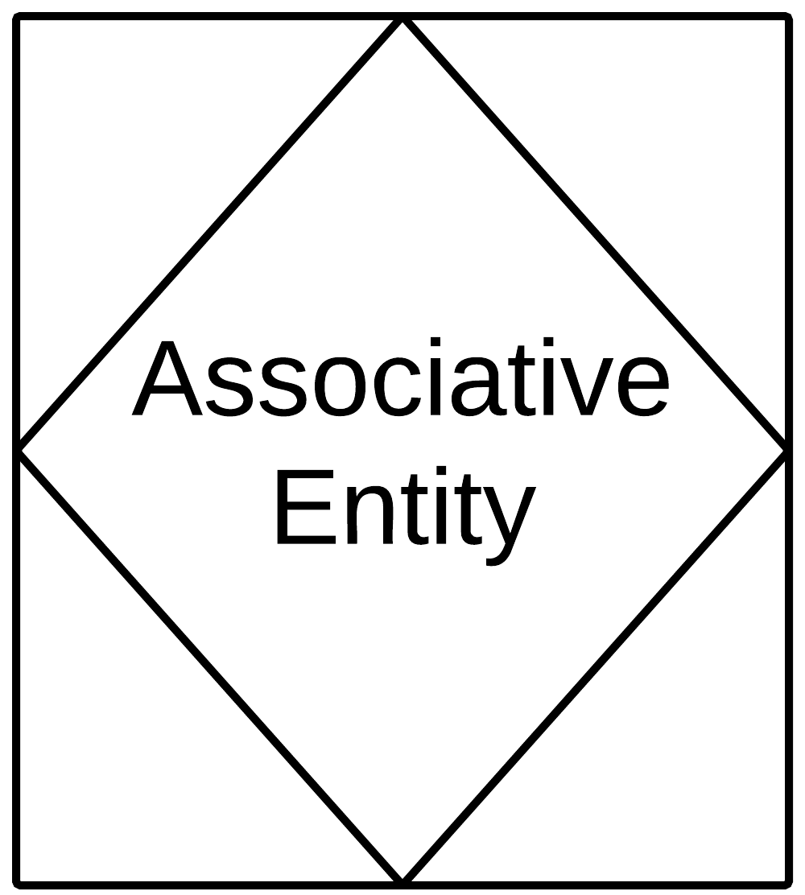
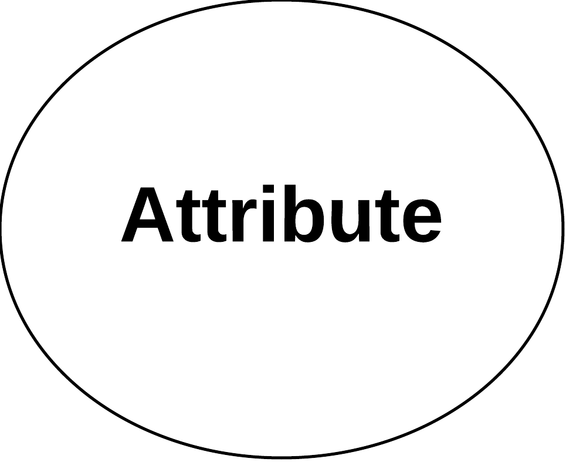
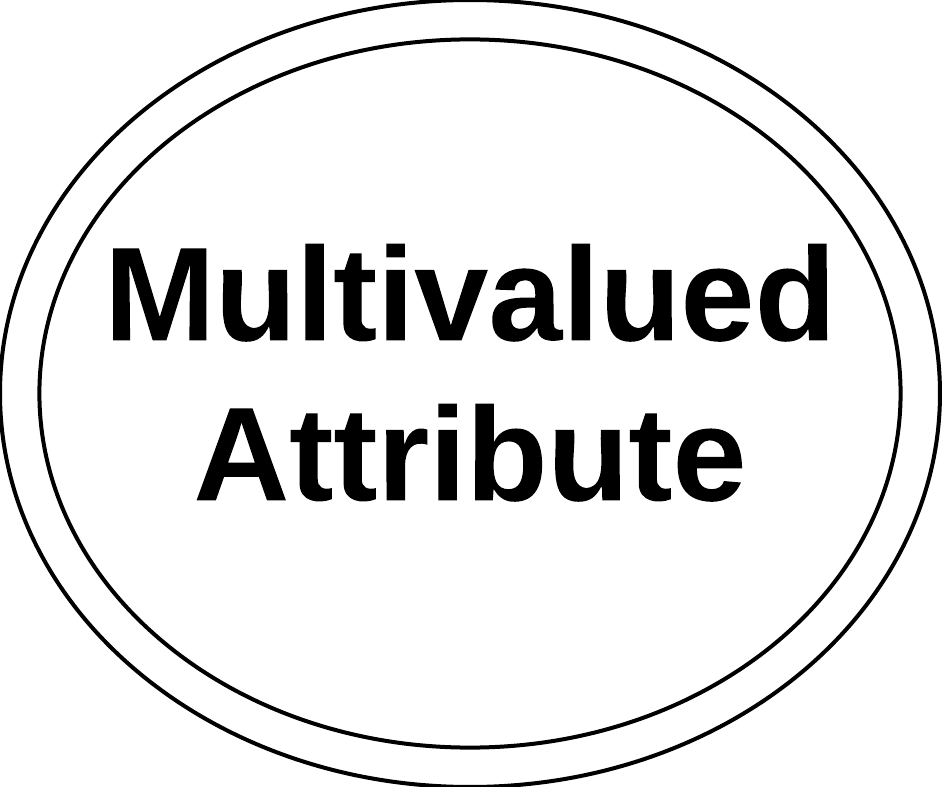

Background Info
Common Notation and Symbols
Entity Relationship Diagrams (ERD): are graphically represented using conceptual and physical diagrams. These diagrams are used to describe the entities, their relationships, and ultimately, instruct the design of the database.
Conceptual ER diagrams: are the often the first step in the Logical Database Design Process. This
diagraming iteration allows database architects to gain a broad view of the entitles that need to be
included in the data model, and the relationships between these entities.

Physical ER diagrams: is the final stage of the database design process. This is the most granular phase of the modeling process, as all elements of the ER are described: entity and field names, keys, cardinality, modality, and deletion rules. 
Why is this important?
Going through the ER diagram design process
has the following benefits:
- Saves time and effort in the long run from having to revamp poorly design databases.
- The database is easy to modify and maintain.
- The data is easy to modify.
- Querying is easier to perform.
- Easier to build and develop end-user applications.
Resources
- My favorite book that discusses this topic: Database Design for Mere Mortals, by Michael J Hernandez
- Chen, Peter Pin-Shan (1976). "The Entity–Relationship Model – Toward A Unified View of Data"ACM Transactions on Database Systems. 1 (1): 9–36. CiteSeerX 10.1.1.523.6679. doi:10.1145/320434.320440. ISSN 0362-5915.
-

-

- consists of a collection of information that when grouped, forms an object or event, which we perceive as a table.
- in relational database, this consists of records (tuples/rows), and fields (column).
- should only represent a single subject.
- is represented by a rectangle.
- existence of this entity does not depend on any other entity in a database schema.
-

- depends on another entity for its existence.
- denoted by a box with double lines.
- does not have its own primary key, instead, it contains a composite key formed by a foreign key and a partial key from its own collection of information.
- a subclass is an example of a weak entity.
-

- a data structure that holds information associated between two or more entities.
- commonly used to resolve Many-To-Many relationships, and adds another table/entity to the schema
- also referred to as "linking tables".
-

- are characteristics of an entity.
- are also referred to as "fields".
- denoted as an oval in the chen notation system, see resources section of this page.
-

- the attribute in an entity that uniquely identifies it among other entities in a schema.
-

- an attribute that contains multiple instances of the same type of value
- the name of the attribute is usually plural
- the value contains several commas that separate multiple occurences of that value. Example field name "Painting_Colors", value: 'yellow', 'red', 'green'. In this example, a value should only contain a single value, but three have been placed with commas.
- these attributes can create significant data integrity issues if not properly addressed.
-

- an attribute whose value is calculated from related fields.
-
- interdependence that exists between two entities when records from one of the entities can be associated with records from another entity
- association between entities
- can be described as strong or weak
- strong relationships are defined by a relationship between two entities that can exist without their relationship
-
- a type of relationship between two entities, one of the entities depends on the other for existence.
- The primary key of the weak entity, also called child entity,is a component of the Parent Entity's primary key
-
Conceptual ER Notations and Symbols